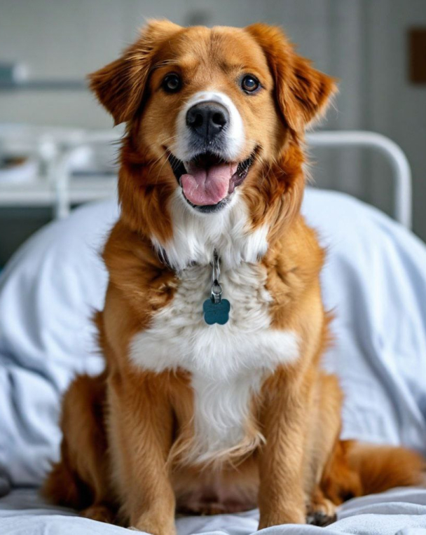
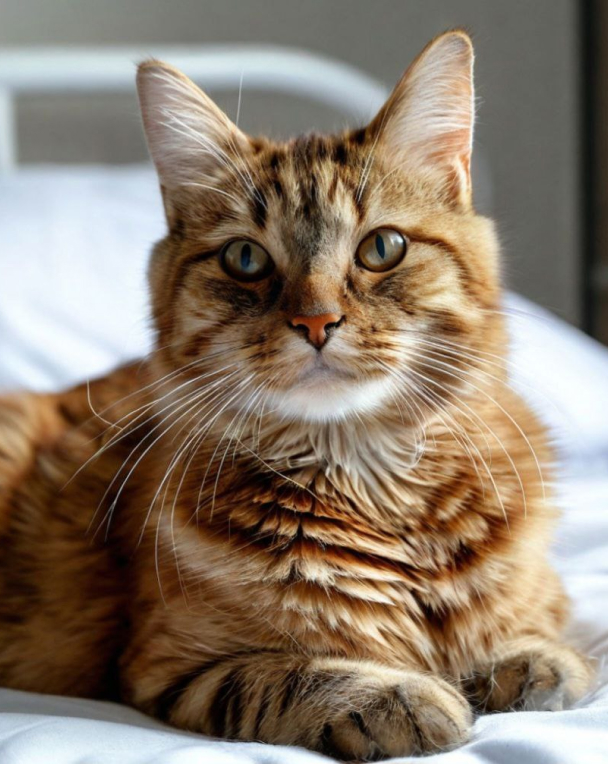
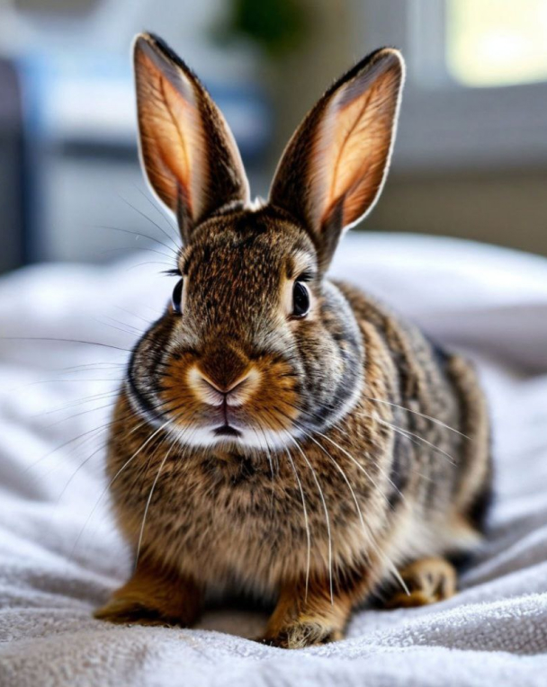
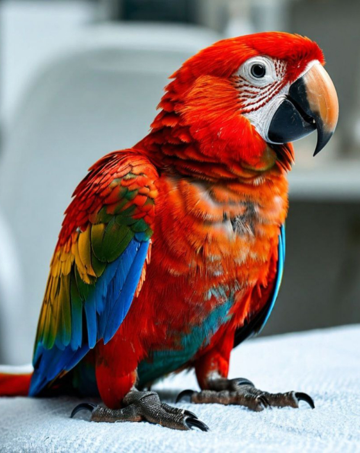

Критерии для собаки-донора
Чтобы собака могла стать донором и спасти чью-то жизнь, она должна соответствовать определенным критериям.
1. Возраст: Собака должна быть в возрасте от 1 года до 7-8 лет.
2. Вес: Минимальный вес собаки для донорства - около 10 кг.
3. Общее состояние: Собака должна быть здорова, без хронических заболеваний, инфекций, паразитов. Она также не должна иметь сердечно-сосудистых проблем, анемии, заболеваний почек и печени.
4. Вакцинация: Собака должна быть вакцинирована от основных заболеваний, таких как бешенство, чума, парвовирусный энтерит, аденовирусная инфекция, лептоспироз, коронавирусная инфекция.
5. Паразитарная защита: Собака должна быть обработана от внутренних и внешних паразитов.

Критерии для кошки-донора
Чтобы кошка могла стать донором и спасти чью-то жизнь, она должна соответствовать определенным критериям.
1. Возраст: Кошка должна быть в возрасте от 1 года до 7-8 лет.
2. Вес: Минимальный вес кошки для донорства - около 4 кг.
3. Общее состояние: Кошка должна быть здорова, без хронических заболеваний, инфекций, паразитов. Она также не должна иметь сердечно-сосудистых проблем, анемии, заболеваний почек и печени.
4. Вакцинация: Кошка должна быть вакцинирована от основных заболеваний, таких как бешенство, панлейкопения, ринотрахеит, калицивирусная инфекция.
5. Паразитарная защита: Кошка должна быть обработана от внутренних и внешних паразитов.

Критерии для кролика-донора
Чтобы кролик мог стать донором и спасти чью-то жизнь, он должен соответствовать определенным критериям.
1. Возраст: Кролик должен быть в возрасте от 1 года до 5 лет.
2. Вес: Минимальный вес кролика для донорства - около 2 кг.
3. Общее состояние: Кролик должен быть здоров, без хронических заболеваний, инфекций, паразитов. Он также не должен иметь сердечно-сосудистых проблем, анемии, заболеваний почек и печени.
4. Вакцинация: Кролик должен быть вакцинирован от миксоматоза и вирусной геморрагической болезни кроликов (ВГБК).
5. Паразитарная защита: Кролик должен быть обработан от внутренних и внешних паразитов.

Критерии для попугая-донора
Чтобы попугай мог стать донором и спасти чью-то жизнь, он должен соответствовать определенным критериям.
1. Возраст: Попугай должен быть в возрасте от 1 года до 5 лет (зависит от вида).
2. Вес: Минимальный вес попугая для донорства зависит от вида, но должен быть в пределах нормы для его возраста и породы.
3. Общее состояние: Попугай должен быть здоров, без хронических заболеваний, инфекций, паразитов. Он также не должен иметь сердечно-сосудистых проблем, анемии, заболеваний почек и печени.
4. Вакцинация: Важно, чтобы попугай был вакцинирован от основных заболеваний, характерных для его вида.
5. Паразитарная защита: Попугай должен быть обработан от внутренних и внешних паразитов.
